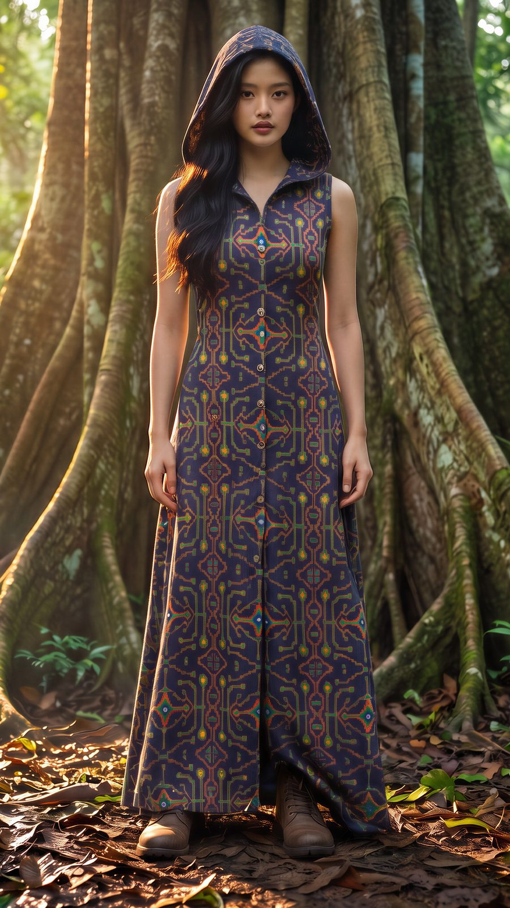
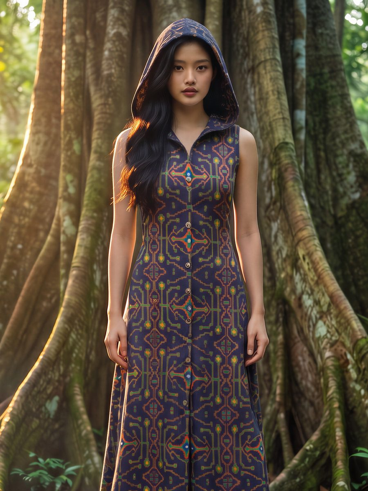
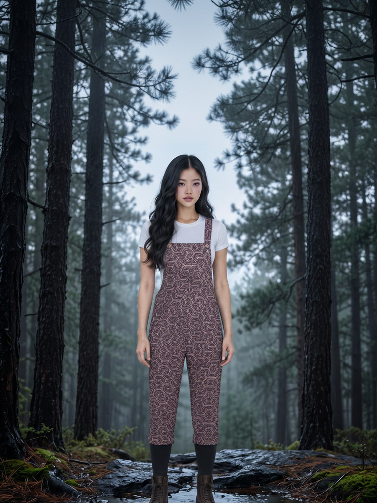
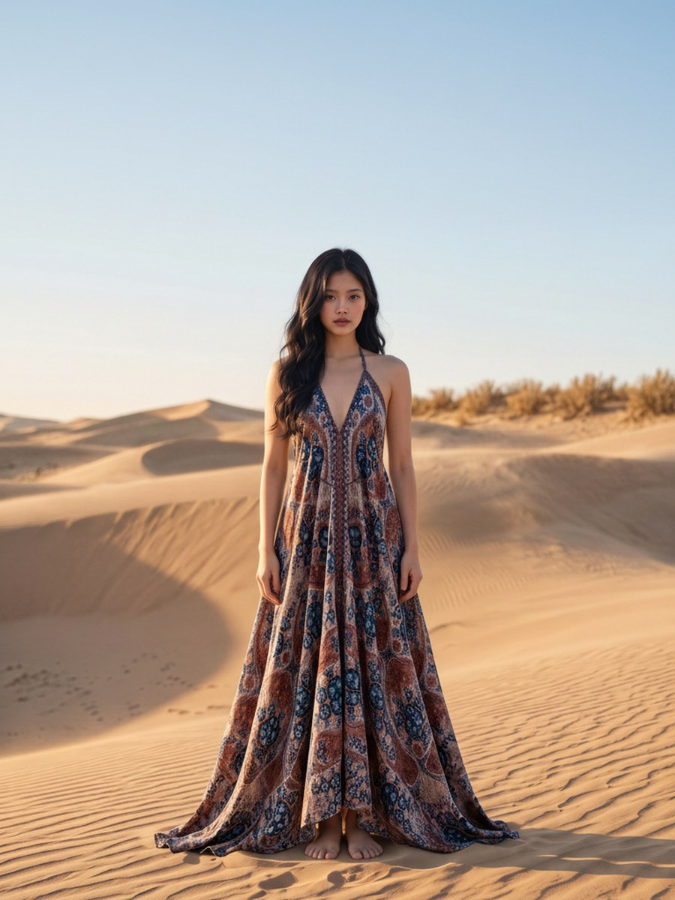
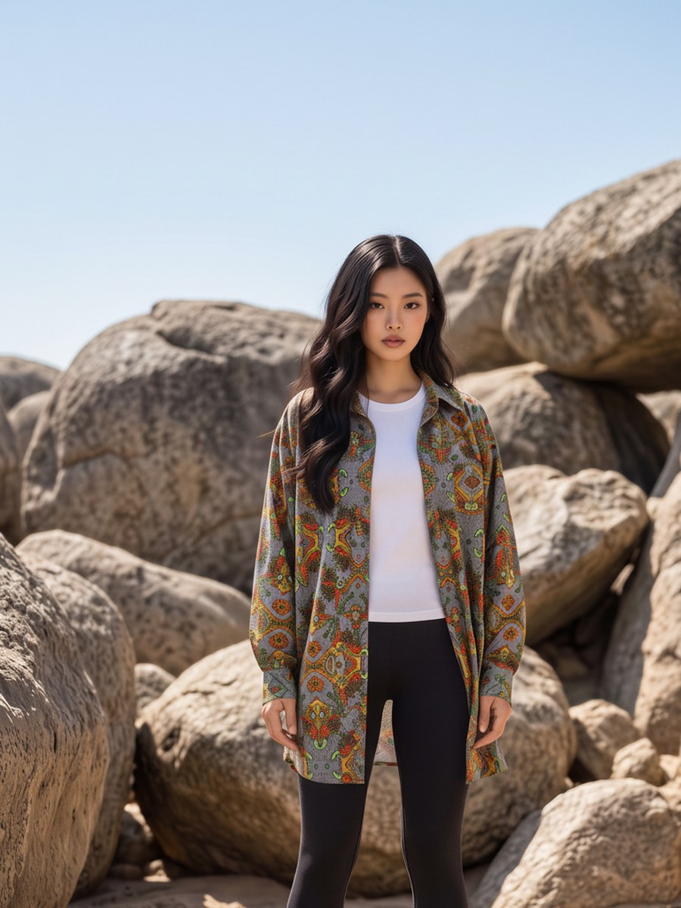
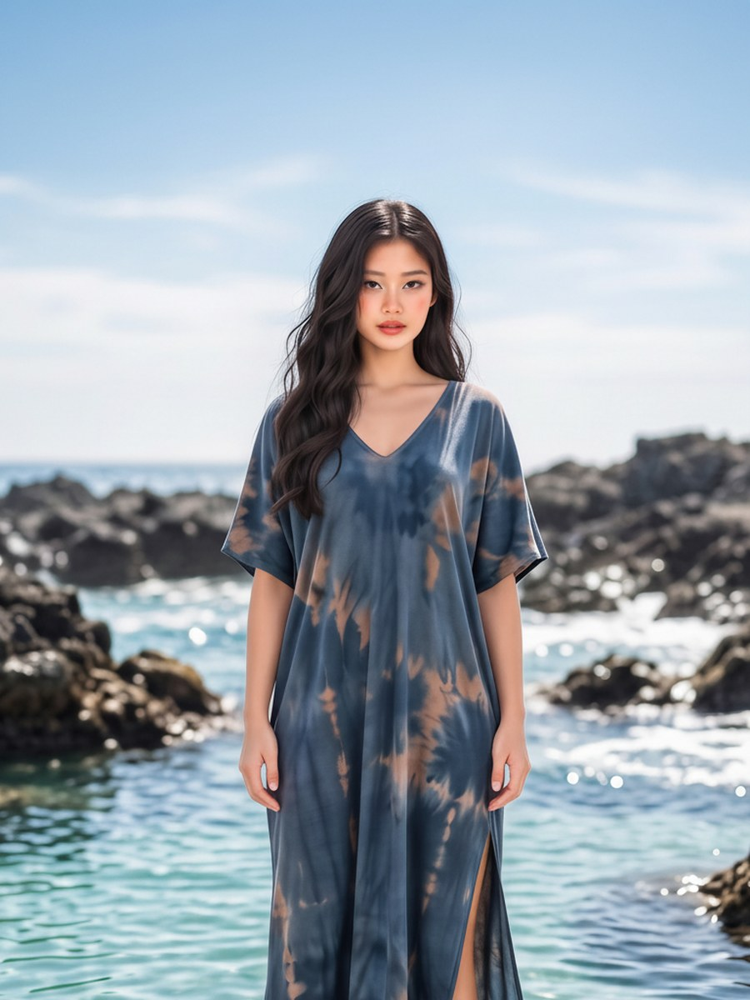
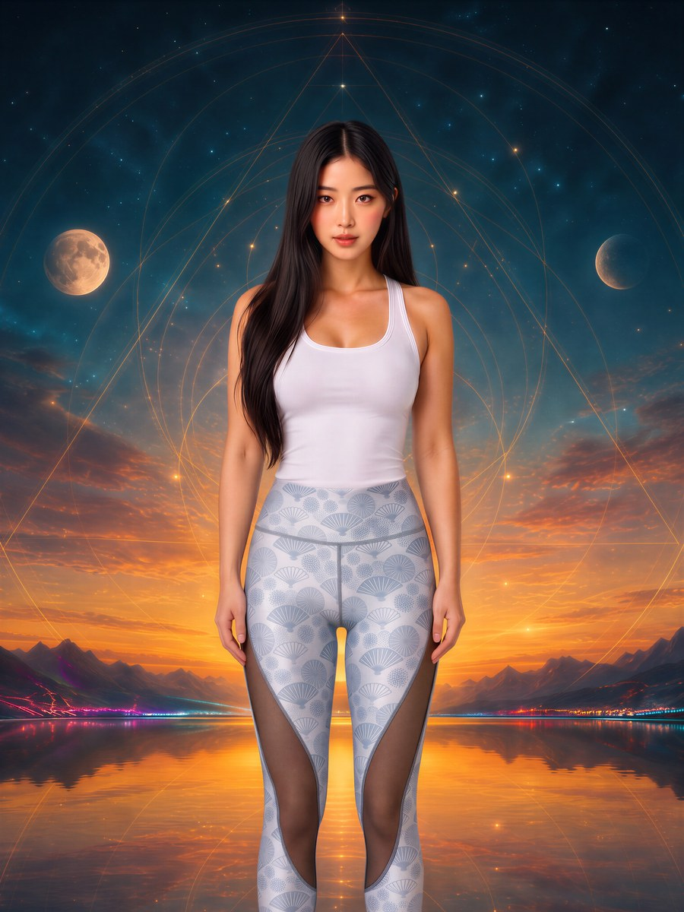
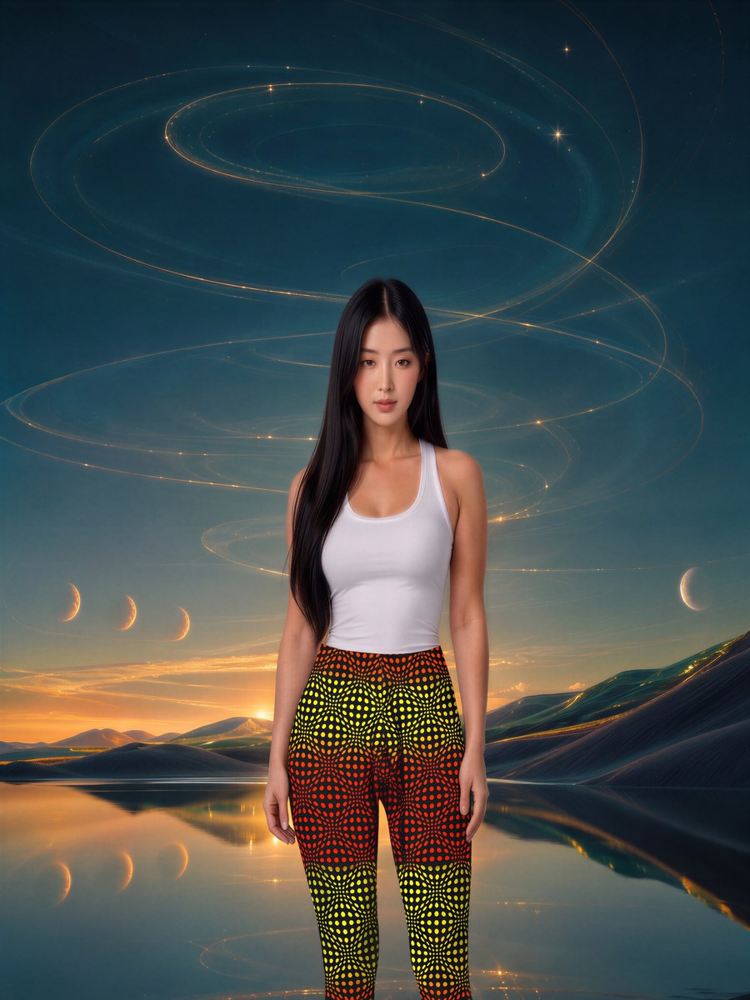

Fashion, decoded
Yerin Seo
One outfit a day.
Yerin is a digital character, and every picture and video here is generated by AI. She is not a real person, and the images are for illustration only. Terms.

Recent looks
Every picture opens the piece at the maker.
The shelf
What she is wearing
Every piece here is sold by Yacxilan Artwear, an independent artwear house. Their product pages show the exact appearance of each piece.
-

Hooded Long Dress — AYAWASKA Yacxilan Artwear - Sleeveless Hooded Jacket — Mayan Codex Yacxilan Artwear
- Long Leggings — Sandsotime Charcoal Yacxilan Artwear
-

Overall / Belguim Linen Screenprint - Pink TRIPIBO Yacxilan Artwear -

Triangle Long Dress / Viscose - OZAKI 8 Yacxilan Artwear -

Longsleeve Shirt / Cotton Popeline - PAKAL'S GOLD Yacxilan Artwear -

Caftan / Organic Bio Farms Bamboo - TSUNAMI Yacxilan Artwear -

Leggings / SportWear Slant - SUNSUN Yacxilan Artwear -

Wide waistband Leggings : Fire Wobberelli Space Tribe
Credited to the seller. Every piece has a page here carrying the seller’s description, and the button on it opens their shop. Prices, sizes and availability are on the seller’s pages, which are the current ones. Some links may earn a commission, at no extra cost to you. Every picture on this site is AI-generated. Terms.